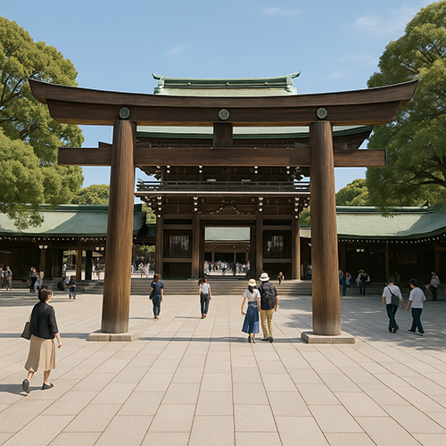

Santuario Meiji – El Tranquilo Santuario en el Bosque de Tokio de la Tradición Sintoísta

Oculto tras majestuosos portales torii y rodeado de un vasto bosque artificial en el animado barrio de Harajuku, el Santuario Meiji (明治神宮, Meiji Jingū) es el santuario sintoísta más sagrado de Tokio y un oasis de paz lejos del bullicio urbano. Dedicado al Emperador Meiji y la Emperatriz Shōken, este santuario simboliza la transición de Japón de un feudalismo aislado a una nación moderna, fusionando antiguos rituales con herencia imperial.
Un Santuario Nacido de la Devoción Imperial
Completado en 1920, el Santuario Meiji honra los espíritus divinizados (no los restos físicos) del Emperador Meiji, el primer emperador moderno de Japón, y de su esposa, la Emperatriz Shōken. El Emperador Meiji lideró la Restauración Meiji, un punto de inflexión que transformó Japón en una potencia mundial mediante la modernización y apertura cultural.
Tras su fallecimiento, el pueblo japonés deseaba un lugar espiritual para conmemorar sus contribuciones. El resultado no fue solo un santuario, sino un bosque sagrado diseñado para durar generaciones. Más de 100,000 árboles fueron donados desde todo Japón y plantados para crear el Bosque Meiji Jingu, un memorial vivo que encarna la armonía entre la naturaleza y las creencias sintoístas.
Puntos Destacados y Rituales Sagrados
Los visitantes acceden al Santuario Meiji pasando bajo el majestuoso Portón Otorii, una de las estructuras torii de madera más grandes de Japón. La tradición indica inclinarse una vez antes de entrar, como muestra de respeto por el suelo sagrado.
A lo largo del camino, encontrará barriles de sake y vino, ofrendas simbólicas que representan la fusión cultural: sake de todo Japón y vino de Francia, ilustrando la apertura internacional del Emperador Meiji. Cerca del santuario interior, los visitantes pueden realizar el ritual de purificación tradicional en la fuente de agua temizuya.
El Templo Principal (Honden) es un lugar de oración, ofrendas y ceremonias matrimoniales. Podrá presenciar bodas sintoístas, una experiencia cultural impactante con novias vestidas de blanco, sacerdotes con atuendos ceremoniales y música tradicional de corte.
Belleza Estacional y Momentos de Paz
El Santuario Meiji es encantador en todas las estaciones: cerezos en flor en primavera, verde exuberante en verano, hojas doradas en otoño y nieve tranquila en invierno. Aunque está en el corazón de Tokio, el santuario parece estar a años luz del ruido urbano gracias a su denso bosque y senderos de grava que amortiguan el mundo exterior.
Una visita al Santuario Meiji a menudo se combina con un paseo por el Parque Yoyogi o con compras en Harajuku, mostrando el perfecto equilibrio de Tokio entre espíritu antiguo y energía moderna.
¿Qué hace único al Santuario Meiji?
- 🌸 Uno de los santuarios sintoístas más importantes de Japón
- 🌸 Rodeado de un bosque sagrado con más de 100,000 árboles
- 🌸 Conexión viva con el Emperador Meiji y la historia moderna de Japón
- 🌸 Entrada gratuita y abierta todo el año
- 🌸 Lugar de bodas sintoístas y festivales estacionales
Cómo Acceder al Santuario Meiji
🌸 Dirección: 1-1 Yoyogi-Kamizono-cho, Distrito Shibuya, Tokio 151-8557, Japón
🌸 Acceso: A 1 minuto a pie de la estación Harajuku (Línea JR Yamanote) o de la estación Meiji-jingumae (Líneas Chiyoda y Fukutoshin)
🌸 Horario: Desde el amanecer hasta el atardecer (varía según la temporada)
Una Parada Imprescindible para Amantes de la Cultura y la Naturaleza
El Santuario Meiji es mucho más que una atracción turística: es un lugar de calma, reflexión e inmersión espiritual. Ya sea que le apasione la cultura, la historia o la naturaleza, una visita al Meiji Jingu enriquecerá su viaje a Tokio con una comprensión profunda de las tradiciones y valores japoneses.
Etiquetas: Santuario Meiji, Meiji Jingu, santuarios sintoístas Tokio, Emperador Meiji, cultura japonesa, atracciones Harajuku, lugares espirituales Tokio, Parque Yoyogi, boda sintoísta, etiqueta santuario Japón
¿Planea visitar el Santuario Meiji?
Para vivir una experiencia realmente inmersiva y significativa, le recomendamos reservar un guía local certificado de nuestro equipo. Todos nuestros guías son profesionales oficialmente reconocidos por el gobierno japonés y ofrecen visitas personalizadas según sus intereses. Contacte con el guía elegido con antelación para confirmar disponibilidad y recibir asistencia experta durante su viaje.